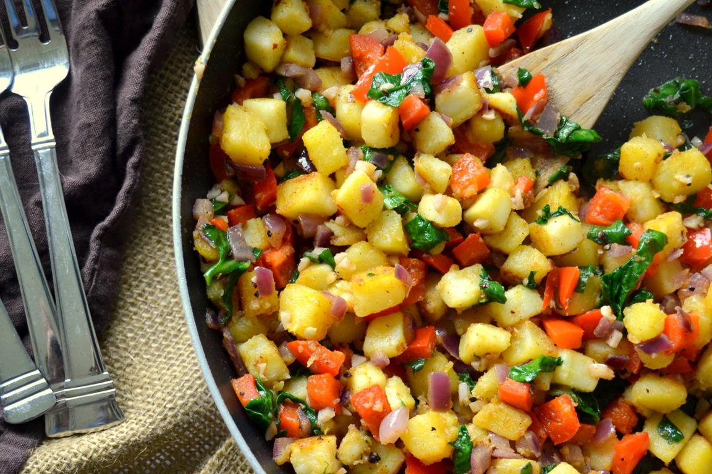

Hearty Breakfast Hash
This colorful and flavorful hash is sure to provide everyone with an array of flavors and tastes to satisfy any morning hunger. Ingredients are easily interchangeable, making this recipe fun and dynamic.
Tools for this recipe include a mixing bowl,a large skillet, a knife, a measuring cup, measuring spoons and a spatula. The following ingredients will be needed:
- 1/4 cup white button mushrooms, washed and sliced
- 2 teaspoons nutritional yeast
- 2 russet potatoes, washed and diced
- 1 red onion, chopped finely
- 1 green bell pepper, washed and chopped finely
- 2 cloves of garlic, peeled and minced"
- 1 cup of frozen corn, defrosted
- 1/4 cup vegetable oil
- 3 tablespoons chopped parsley
- 1 lemon washed and sliced in half
- Salt and black pepper to taste
- Prep time: 20 minutes
- Cook time: 20 minutes
- Serves: 3-4
Directions:
- Heat vegetable oil in a skillet on medium heat
- In a mixing bowl, stir together the diced potatoes, chopped red onion, chopped bell pepper, minced garlic, defrosted corn, salt, pepper and mushrooms.
- Add the mixture to the heated pan and saute for 15 minutes over medium heat, stirring occasionally
- Reduce the heat to low and sprinkle the parsley over the mixture and squeeze in desired amount of lemon juice
- Sprinkle with nutritional yeast.
- Turn off the stove and take skillet off heat